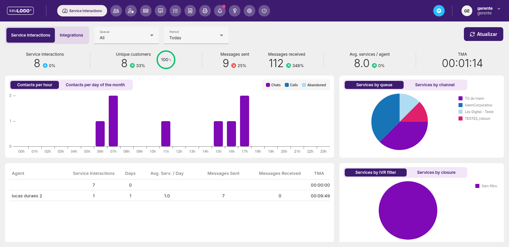
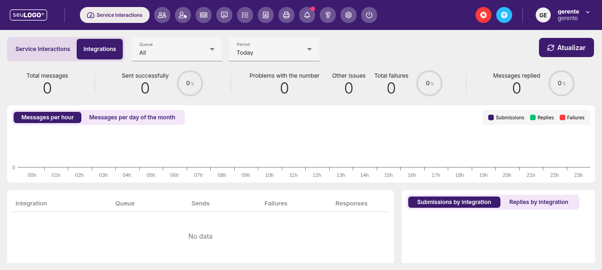

Dashboard e Indicadores (KPI)
O painel principal de atendimento. É a primeira tela após o login e também é acessado pelo endereço /base/reports/kpidashboard.
/base/reports/kpidashboard) abre a tela de Service Interactions (Interações de Serviço), que reúne os principais indicadores de atendimento. É aqui que você acompanha, em tempo real, o desempenho do dia.

1. Filtros no topo da tela
Antes de ler os números, defina o recorte desejado. Dois filtros aparecem no topo:
| Filtro | O que faz |
|---|---|
| Queue (Fila) | Mostra dados de uma fila específica ou de “All” (todas as filas). |
| Period (Período) | Define o intervalo de tempo, por exemplo “Today” (Hoje). |
Após ajustar os filtros, clique no botão Atualizar para aplicar.
2. Cartões de KPI (Indicadores principais)
Cada cartão mostra o valor atual e a variação em relação a um período anterior (seta verde = alta, vermelha = queda, azul = estável).
| Indicador | Significado |
|---|---|
| Service Interactions | Total de interações de atendimento no período. |
| Unique customers | Clientes únicos atendidos. |
| Messages sent | Mensagens enviadas pela equipe. |
| Messages received | Mensagens recebidas dos clientes. |
| Avg. services / agent | Média de atendimentos por agente. |
| TMA | Tempo Médio de Atendimento (formato HH:MM:SS). |
3. Gráfico de contatos por hora
A barra roxa mostra a distribuição dos contatos ao longo do dia (00h a 23h). Você pode alternar entre duas visões:
- Contacts per hour — contatos por hora do dia.
- Contacts per day of the month — contatos por dia do mês.
Na legenda, as cores representam os tipos de contato: Chats, Calls (ligações) e Abandoned (abandonados).
4. Gráficos de distribuição (pizza)
Dois gráficos de pizza permitem visualizar de onde vêm os atendimentos:
- Services by queue vs Services by channel — atendimentos por fila ou por canal (ex.: TG do Ivann, IvannCorporativo, Lex Digital - Teste, TESTES_robson).
- Services by IVR filter vs Services by closure — atendimentos por filtro de URA (IVR) ou por tipo de encerramento.
5. Tabela de agentes
Na parte inferior, uma tabela detalha o desempenho por atendente:
| Coluna | Descrição |
|---|---|
| Agent | Nome do atendente. |
| Service Interactions | Quantidade de atendimentos. |
| Days | Dias com atividade no período. |
| Avg. Serv. / Day | Média de atendimentos por dia. |
| Messages Sent | Mensagens enviadas. |
| Messages Received | Mensagens recebidas. |
| TMA | Tempo médio de atendimento do agente. |
Os cabeçalhos das colunas são clicáveis para ordenação.
6. Passo a passo — leitura diária do dashboard
- Faça login em
fastcorte.atenderbem.com(usuário gerente). - Confirme os filtros Queue = All e Period = Today.
- Observe os cartões de KPI e as setas de variação.
- Analise o pico de contatos no gráfico “por hora” para dimensionar a equipe.
- Verifique a tabela de agentes para identificar gargalos de TMA.
- Clique em Atualizar a qualquer momento para refrescar os dados.
7. Aba Integrations (Mensagens)
Na mesma tela de Service Interactions, há a aba Integrations, que monitora o desempenho de envio de mensagens pelas integrações (ex.: WhatsApp/API).

Métricas de mensagens
- Total messages — total de mensagens processadas.
- Sent successfully — envios com sucesso.
- Problems with the number — problemas com o número.
- Other issues — outros problemas.
- Total failures — total de falhas.
- Messages replied — mensagens respondidas.
O gráfico "Messages per hour" (ou "per day of the month") mostra Submissions, Replies e Failures ao longo do dia.
Tabela de integrações
Colunas: Integration, Queue, Sends, Failures, Responses. Abaixo, um gráfico de "Submissions by integration" / "Replies by integration".